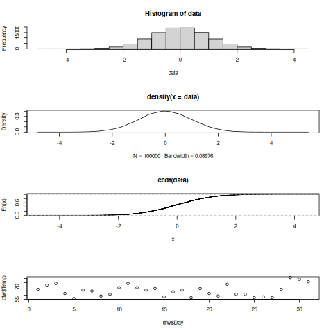

Taller de R. Clase 06
Table of Contents
1. Ejercicio
Leer los datos en distintos archivos de dbeta y guardarlos a una lista
rut <- "./data/dbeta" files <- list.files(path=rut, pattern=".dat") path <- paste(rut, "/", files[1], sep="") df <- read.table(path, sep=",", header=FALSE, skip=1) #names(df)<- c('id', 'tiempo', 'cenit', 'acimut', 'declinacion', 'd', 'p1', 'p2', 'p3', 'r', 'tsolar') l <- list(df) for(f in files[-1]){ path <- paste(rut, "/", f, sep="") df <- read.table(path, sep=",", header=FALSE, skip=1) #names(df)<- c('id', 'tiempo', 'cenit', 'acimut', 'declinacion', 'd', 'p1', 'p2', 'p3', 'r', 'tsolar') len<-length(l) l[[len+1]] <- df } length(l)
Obtener la distancia primedio entre
lapply(l, function(x) mean(sqrt(x[[7]]^2+x[[9]]^2)) )
sapply(l, function(x) mean(sqrt(x[[7]]^2+x[[9]]^2)) )
2. Ejercicio II
Leer los archivos en dbeta y concatenarlos en un único archivo
rut <- "./data/dbeta" files <- list.files(path=rut, pattern=".dat") path <- paste(rut, "/", files[1], sep="") df <- read.table(path, sep=",", header=FALSE, skip=1) for(f in files[-1]){ path <- paste(rut, "/", f, sep="") aux <- read.table(path, sep=",", header=FALSE, skip=1) df <- rbind(df, aux) } names(df)<- c('id', 'tiempo', 'cenit', 'acimut', 'declinacion', 'd', 'p1', 'p2', 'p3', 'r', 'tsolar') time <- strptime(df$tiempo, "%Y-%m-%d %H:%M:%S") df$tiempo <- time head(df)
tapply(df$p1, df$tiempo$yday, mean)
172 215 233 249 264 279 294 313 355
0.1094235 0.1216368 0.1333419 0.1402298 0.1454683 0.1882011 0.1896050 0.1910719 0.1923433
sapply( split(df$p1, df$tiempo$yday), mean)
172 215 233 249 264 279 294 313 355
0.1094235 0.1216368 0.1333419 0.1402298 0.1454683 0.1882011 0.1896050 0.1910719 0.1923433
3. Generación de numeros aleatorios
Funciones de distribución de probabilidad en R
rnorm, genera aleatorios con una distribución normal, con una media y una desviación estándardnorm, evalua la densidad de probabilidad Normal (con una media/SD) en un punto (o vector)pnorm, evalua la distribución acumulada de una distribución normalrpois, genera numeros aleatorios con una distribución Poisson
Trabajando con una distribución Normal
dpara densidadrpara generación de numeros aleatoriosppara distribución acumuladaqpara cuartiles
- dnorm(x, mean = 0, sd = 1, log =FALSE)
- pnorm(q, mean = 0, sd = 1, lower.tail = TRUE, log.p = FALSE)
- qnorm(p, mean = 0, sd = 1, lower.tail = TRUE, log.p = FALSE)
- rnorm(n, mean = 0, sd = 1, log =FALSE)
Sí \(\Phi\) es la función de distribución acumulada para una distribución Normal, entonces \(pnorm(q)=\Phi(q)\) y \(qnorm(p)=\Phi^{-1}(p)\)
rnorm(25)
[1] 0.89516600 -0.84809421 0.82869256 -0.51490090 -0.64110573 -1.22145019 0.75481489 -1.58112195 -1.67005378 [10] -0.95802270 0.40064999 0.69158733 0.30409533 0.87905031 1.14840179 -0.80057839 -0.79877928 -2.60557121 [19] -0.22955353 0.46150111 1.04060778 -1.38203785 0.18978201 0.07486468 0.42639574
4. runif
data <- runif(1000)
plot(data)
data <- runif(100000)
hist(data)
data <- runif(100000) ddata <- density(data) plot(ddata)
5. rnorm
La regla 68-95-99.7 establece que el 68% de los valores de una distribución normal se sitúan dentro de una desviación típica de la media, mientras que el 95% y el 99.7% de los valores se sitúan dentro de dos y tres desviaciones típicas, respectivamente.

data <- rnorm(10000)
plot(data)
data <- rnorm(100000)
hist(data)
data <- rnorm(100000) ddata <- density(data) plot(ddata)
data <- rnorm(10000) cdf <- ecdf(data) plot(cdf)
6. Ploting
Las gráficas en R son encapsuladas en la base y en algunos paquetes recomendados
- graphics
- lattice
- ggplot
- grid
- grDevice
La función par es usada para especificar parametros globales de la gráfica que afectan todos los plots en la sesión de R.
pch: el simbolo de las gráficas (un circulo abierto por default)lty: el tipo de linealwd: el ancho de lineacol: color de línealas: la orientación de los ejes
6.1. R
file = "./data/hw1_data.csv" df <- read.table(file, sep=',', header=TRUE) head(df)
Ozone Solar.R Wind Temp Month Day 1 41 190 7.4 67 5 1 2 36 118 8.0 72 5 2 3 12 149 12.6 74 5 3 4 18 313 11.5 62 5 4 5 NA NA 14.3 56 5 5 6 28 NA 14.9 66 5 6
dfw <- df[df$Month ==5,] plot(dfw$Day, dfw$Temp, type='p')
dfw <- df[df$Month ==5,] png("./fig/plot01.png") ### pdf, bmp plot(dfw$Day, dfw$Temp, type='l') dev.off()
X11cairo
2
par(mfrow=c(4,1)) dfw <- df[df$Month ==5,] plot(dfw$Day, dfw$Temp, type='l') plot(dfw$Day, dfw$Temp, type='p', pch=2) plot(dfw$Day, dfw$Temp, type='l', lty=2) plot(dfw$Day, dfw$Temp, type='l', col= 2) par(mfrow=c(1,1))
